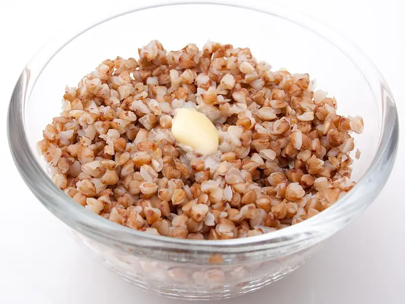

Фото: Laitr Keiows, CC BY-SA 3.0

Гречка рассыпчатая
Гречка на гарнир, крупинка к крупинке
25 мин4 порц.156 ккал на порциюБ 6 · Ж 2 · У 31Русская кухня
Продукты на 4 порц.
- Гречка1 стак.
- Вода2 стак.
- Соль1 ч. л.
- Сливочное масло по желанию1 ст. л.
Как готовить
- Переберите гречку и промойте её в холодной воде 2-3 раза.
- Подсушите гречку на сухой сковороде на среднем огне 3-4 минуты, помешивая, до орехового запаха.
- Вскипятите воду в кастрюле с толстым дном, посолите и всыпьте гречку.
- При закипании убавьте огонь до самого слабого, накройте крышкой и варите 15 минут. Не мешайте.
- Проверьте: вода должна полностью впитаться, на дне видны дырочки.
- Выключите огонь, добавьте масло, накройте и дайте постоять 10 минут.
Совет. Соотношение 1 к 2 по объёму. Не открывайте крышку во время варки, иначе пар уйдёт и гречка станет жёсткой. Без масла блюдо постное.